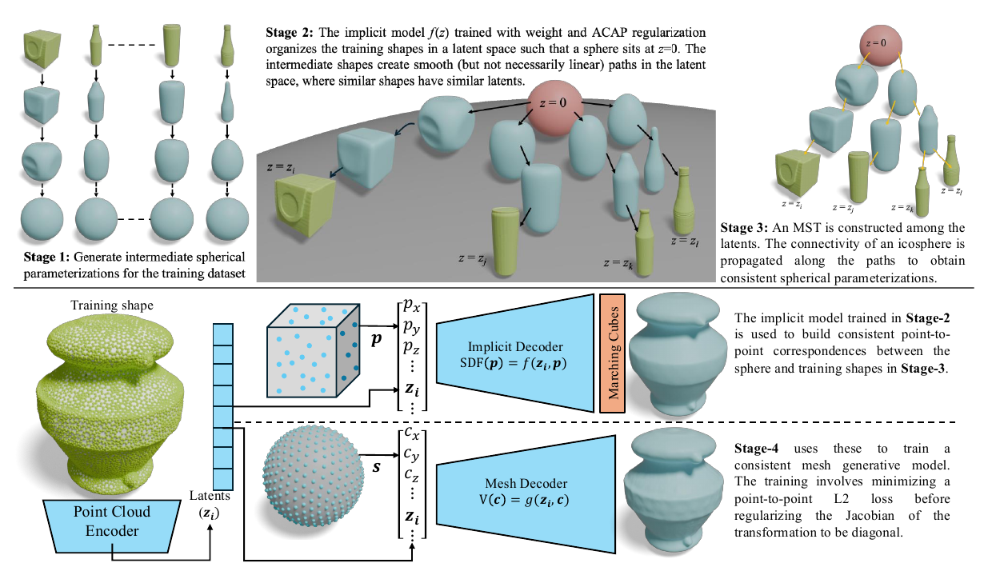
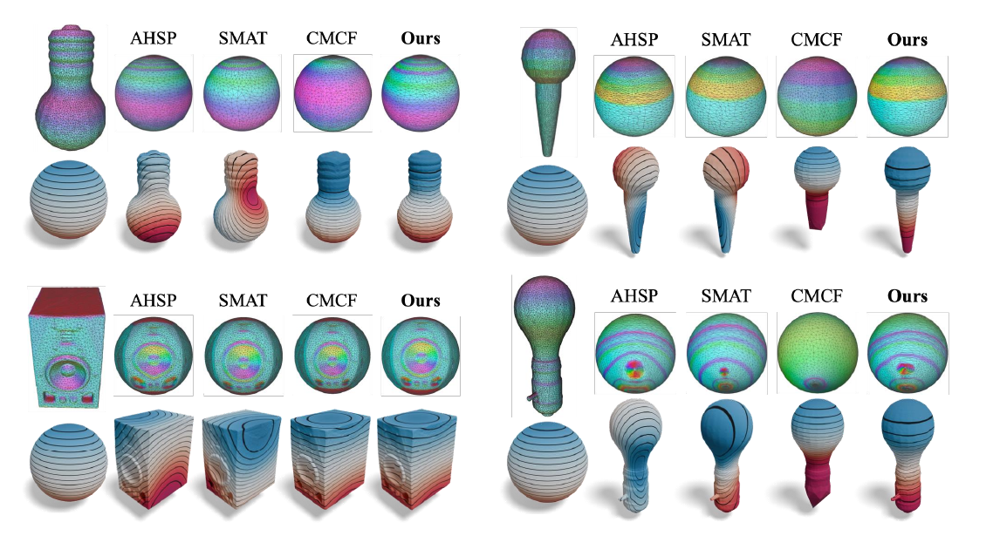
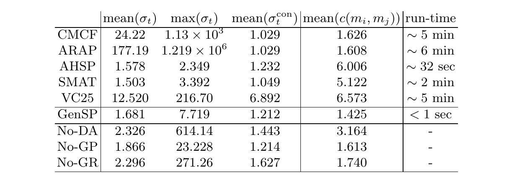

We introduce GenSP, a data-driven framework that learns consistent spherical parameterizations across a collection of genus-0 shapes. Instead of optimizing the parameterization of each shape independently, our method learns a neural generative model that predicts a continuous mapping from the unit sphere to shapes in a dataset. Under this formulation, spherical parameterizations are obtained through the inverse mappings of the learned generator, which encourages similar shapes to share consistent parameterizations. To make this formulation practical, we address several key challenges in learning such a generative model. First, we introduce a continuous neural deformation model that predicts surface points from sphere coordinates and latent shape codes, avoiding discretization artifacts common in mesh-based formulations. Second, we augment the training space with intermediate shapes that bridge the sphere and input shapes, allowing the model to learn meaningful deformations across a heterogeneous shape collection. Third, we compute reliable initial correspondences by propagating mappings along a spanning tree of training shapes in the latent space. Experiments on the ShapeNet dataset demonstrate that our approach significantly reduces geometric distortion and improves cross-shape consistency compared with state-of-the-art spherical parameterization methods.



@inproceedings{pentapati2026gensp,
title = {GenSP: Consistent Spherical Parameterization via Learning Shape Generative Models},
author = {Pentapati, Sai Karthikey and Gupta, Shashank and Sureddi, Rajesh and Yang, Yuezhi and Bovik, Alan C. and Huang, Qixing},
booktitle = {European Conference on Computer Vision (ECCV)},
year = {2026}
}